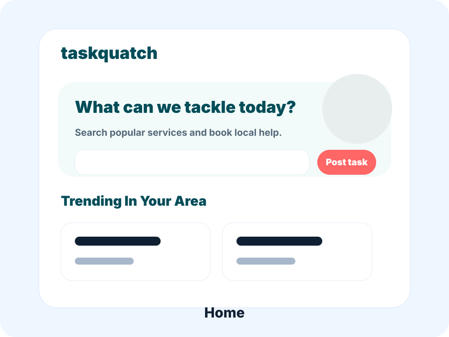
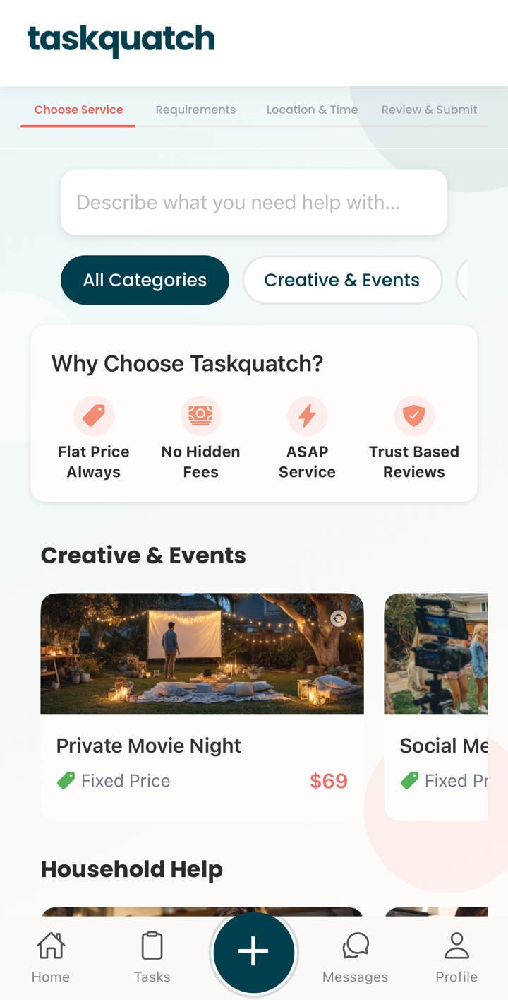
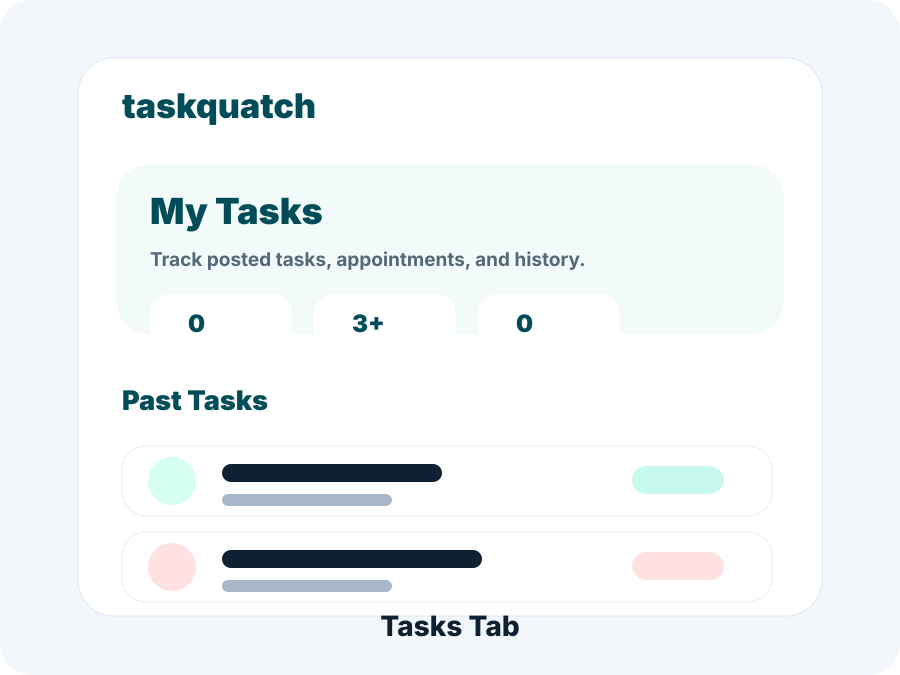
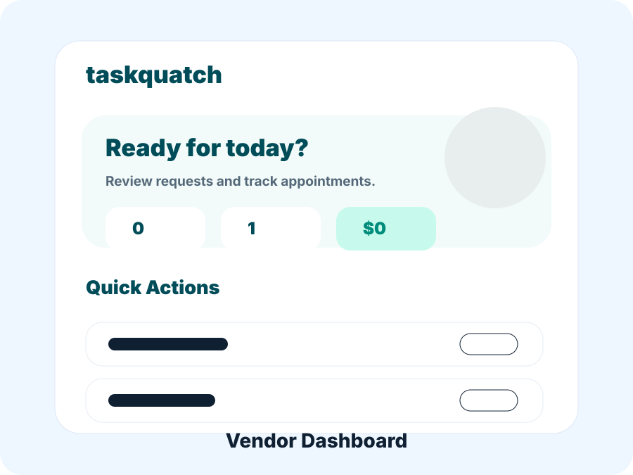
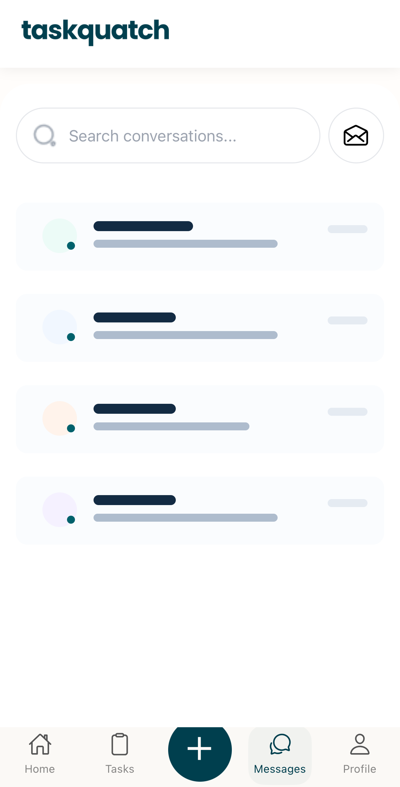
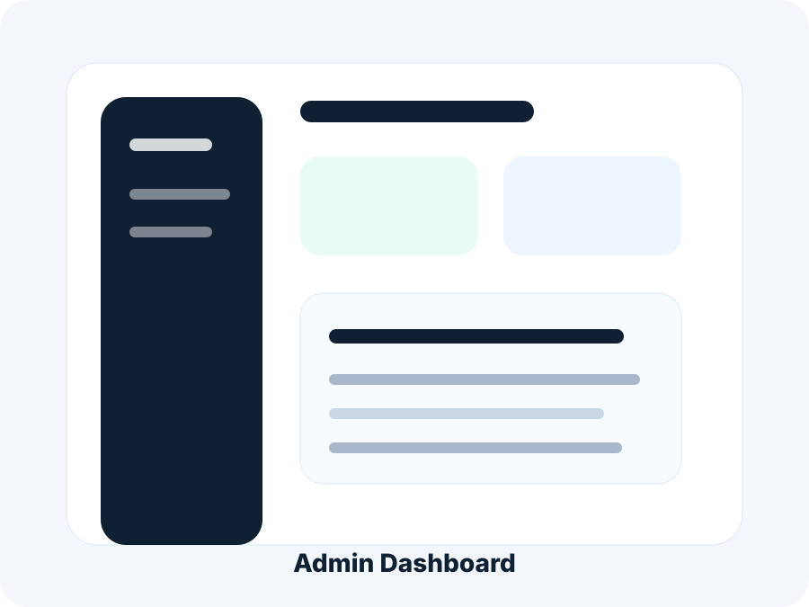
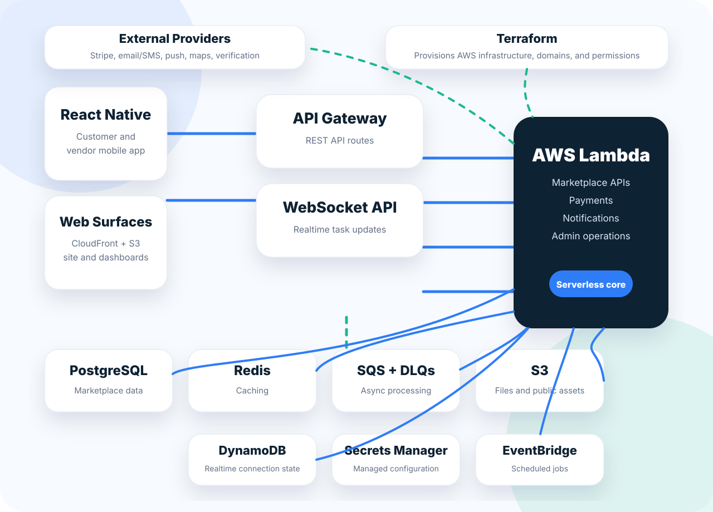

Public Product Showcase
Neighbors Helping Neighbors
A hyperlocal marketplace connecting neighbors with trusted local providers.
This public showcase focuses on product, architecture, and outcomes while intentionally excluding production source code and private implementation details.
Matched
Need help assembling patio furniture?
Post the task, review local providers, and pay securely after the job is complete.
Nearby provider
4.9 rating
Secure payment
Stripe powered
Product Overview
Built around the real workflow of local services.
Taskquatch brings together task discovery, provider matching, payments, onboarding, trust systems, and operational tooling in one marketplace experience.
Task Posting
Neighbors describe what they need, add context, and publish tasks designed for fast local response.
Matching
Relevant local providers can discover opportunities that fit their skills, area, and availability.
Payments
Marketplace payments support a clear customer and vendor flow without exposing financial complexity.
Vendor Onboarding
Providers can create profiles, define their services, and prepare to receive local work.
Trust & Safety
Reviews, reporting, moderation workflows, and provider context help build confidence in local jobs.
Operations Tooling
Internal dashboards support marketplace oversight, customer support, and operational decisions.
Screenshots Gallery
Representative product surfaces.
Public-safe simulator captures and mockups are included to show product surfaces without exposing private user data, operational records, or proprietary implementation details.

Home

Create Task

Tasks Tab

Vendor Dashboard

Messaging

Admin Dashboard
Architecture
Cloud-native marketplace foundation.
This simplified diagram shows the public-facing runtime shape: mobile and web clients call API entry points, Lambda coordinates marketplace workflows, and AWS-managed services support data, realtime updates, files, queues, and integrations.

Client Experiences
React Native powers mobile customer and vendor flows, while web surfaces support marketing and operations.
API Edge
REST and WebSocket APIs route product traffic into serverless backend workflows.
Serverless Core
AWS Lambda handles marketplace APIs, payments, notifications, admin operations, and scheduled workflows.
Data & Cache
PostgreSQL stores marketplace records, Redis supports caching, and DynamoDB tracks realtime connection state.
Async Processing
SQS queues and dead-letter queues support background jobs, notification processing, and reliability-sensitive work.
Storage & Delivery
S3 and CloudFront support public web delivery, uploaded assets, and file-oriented workflows.
External Providers & IaC
Stripe and other providers integrate through backend services, while Terraform provisions the AWS foundation.
Trust & Safety Workflow
Identity verification supports safer marketplace participation.
Taskquatch uses a verification workflow during vendor onboarding to help protect customers, support operations review, and gate access to marketplace privileges. This public view stays intentionally high level and excludes provider payloads, credentials, internal routes, and review logic.
Vendor Onboarding
Providers begin with profile and eligibility information.
Secure Upload
Required documents are collected through controlled upload flows.
Protected Storage
Uploaded materials are handled separately from public product content.
Verification Provider
Third-party checks return structured status signals to the platform.
Operations Review
Admin workflows support review, exceptions, and safety decisions.
Marketplace Access
Verification status informs provider visibility and task eligibility.
Marketplace Operations
Built to support the messy realities of a two-sided marketplace.
Beyond the customer app, Taskquatch includes operational workflows that help manage providers, tasks, support issues, marketplace quality, payouts, and safety review without exposing internal tooling. Taskquatch includes support and alerting integrations such as live support chat and Slack-based operational notifications, helping shorten response times for customer issues, vendor workflows, and reliability events.
Vendor Approvals
Review workflows support onboarding decisions and provider readiness before marketplace participation.
Task Lifecycle
Operational views help track task creation, matching, completion, cancellation, and follow-up states.
Customer Support
Support tooling helps investigate issues, respond to edge cases, and keep user interactions moving.
Payout Oversight
Payment and payout visibility supports marketplace reconciliation without exposing financial internals.
Content Moderation
Reporting and review flows help protect the marketplace from unsafe or low-quality activity.
Health Visibility
Operational status views make it easier to monitor important workflows and diagnose incidents.
Reliability & Automation
Background automation keeps marketplace workflows moving.
The platform uses asynchronous processing, scheduled jobs, health checks, and error reporting to make critical flows more resilient as marketplace activity grows.
SQS + Dead-Letter Queues
Background jobs and retry paths support notifications, task state changes, and operational workflows.
Recurring Jobs
Time-based processors support reminders, maintenance workflows, and marketplace housekeeping.
Health & Error Reporting
Monitoring-oriented endpoints and error reporting help surface failures before they become user-facing.
Growth Systems
Product growth was supported by dedicated acquisition and retention systems.
Taskquatch combines product-led marketplace loops with marketing infrastructure designed for local demand, provider supply, and repeat engagement.
Referrals
Referral flows encourage customers and providers to bring new users into the marketplace.
Coupons
Promotional systems support acquisition, activation, and targeted marketplace incentives.
Marketing Pages
Public landing pages and local SEO content help explain services and capture intent.
Lifecycle Messaging
Email and push campaigns support onboarding, education, reminders, and re-engagement.
Payments & Payouts
Marketplace payments require clear state, trust, and reconciliation.
The public payment view focuses on outcomes, not implementation details. Customers need confidence at checkout, providers need transparent payout expectations, and operations needs visibility into exceptions.
1
Task Completed
2
Payment Captured
3
Platform Fee Applied
4
Vendor Payout
5
Reconciliation
Realtime Updates
Task status changes can reach the app without waiting for manual refreshes.
Realtime infrastructure supports task status visibility in the mobile experience, with app-level fallback behavior so core task flows remain usable even when realtime delivery is unavailable.
WebSocket entry point
Task status publishing
Connection state tracking
Mobile fallback path
Admin Tooling
Internal tooling turns marketplace operations into repeatable workflows.
The public showcase only describes broad capability areas. It does not include admin source code, screenshots with private data, internal payloads, or operational identifiers.
Operations Console
Open Reviews
12
Tasks Watched
84
Healthy Systems
99%
Vendor review
Verify profile readiness
Task monitoring
Watch lifecycle exceptions
Support queue
Resolve customer issues
User support
Vendor review
Task monitoring
Content reports
Payout oversight
Health checks
Marketing operations
Data export support
Case Study
From idea to operated local marketplace.
Problem
Neighbors often need small, local jobs completed quickly, while capable local providers need better access to nearby demand.
Solution
Taskquatch connects customers and providers through task posting, matching, messaging, payments, verification, and operations tooling.
Outcome
The product grew into a multi-city marketplace with thousands of users, hundreds of vendors, and daily marketplace activity.
Technical Highlights
Pragmatic technology choices for a growing marketplace.
React Native
Node.js
AWS
Terraform
Stripe
Docker
PostgreSQL
Challenges & Learnings
Operating a marketplace means solving both software and liquidity problems.
Marketplace Cold Start
Early growth required making each side of the marketplace useful before density was guaranteed.
Supply-Demand Balancing
Provider availability, local demand, and category coverage needed ongoing operational feedback loops.
Reliability
Task flows, notifications, payments, and admin actions had to remain dependable as usage increased.
Fast Iteration
Product decisions were shaped by real user behavior, operational needs, and marketplace quality signals.
About the Builder
Designed, built, and operated end-to-end by Guy Cherkesky.
This public repository is a portfolio-style showcase of the product, architecture, and outcomes behind Taskquatch. It intentionally excludes production source code, secrets, credentials, and proprietary backend implementation details.